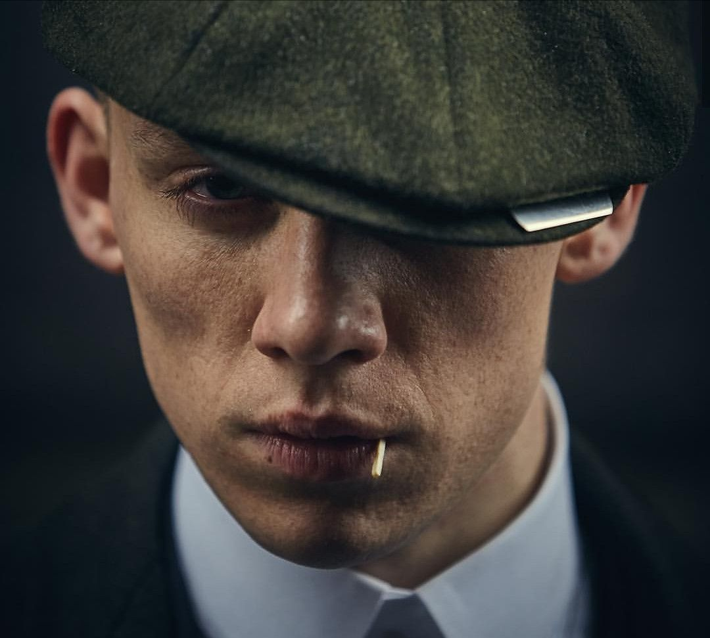

John Michael Shelby era o terceiro filho de Arthur Shelby Sr , irmão de Arthur , Thomas , Ada e Finn Shelby , além de ser marido de Esme Shelby.
John era um membro de alto escalão dos Peaky Blinders , além de ser um acionista de 1/3 da empresa Shelby Family , Shelby Company Limited .
Depois que os Peaky Blinders se misturam com a Família Changretta , John recebe a Mão Negra (uma ameaça de morte) deles, mas demora a reagir e perde um aviso de Thomas, resultando em ele ser morto a tiros fora de sua casa pelo italiano.
Junto com seus dois irmãos mais velhos Thomas e Arthur Shelby Jr. , John foi um soldado da Warwickshire Yeomanry , que serviu como cavalaria e metralhadoras na Primeira Guerra Mundial .
Sendo o terceiro Shelby mais velho, John frequentemente participa de todas as reuniões da família Shelby que acontecem na casa dos Shelby. A partir dessas reuniões, é evidente que John não confia e não gosta de policiais, e não tem medo de machucá-los para fazê-los deixar os Peaky Blinders em paz.
John idolatra o apelido Peaky Blinders, toda a imagem e o que eles representam. Embora seja mais bem-humorado que seus irmãos mais velhos, ele tem o famoso temperamento de Shelby. Suas ações às vezes podem ser imprudentes, mas ele se mostrou mais parecido com Thomas ao lidar com os negócios da família. Embora ele não seja tão cruel quanto Thomas ou imprudente como Arthur, ele é tão perigoso e capaz.

Durante a primeira temporada Jonh demonstrava uma personalidade mais quieta; emotivo, mas nas temporadas seguintes aparenta ser um pouco temperamental e explosivo, em certas situações.